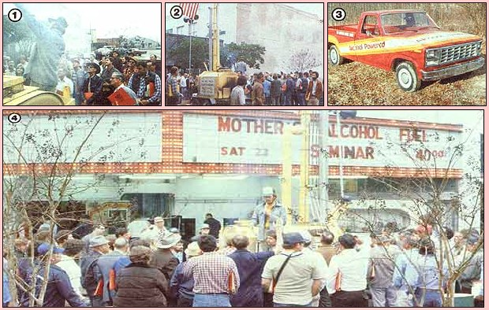

[1] A member of MOTHER'S alcohol fuel team explains the deistillation process. [2] Crowds view MOM's new six-inch column still in Louisiana. [3] MOTHER's latest alcohol-powered truck. [4] Seminar attendees ask questions while the still is demonstrated.